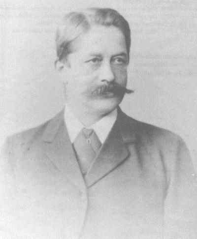
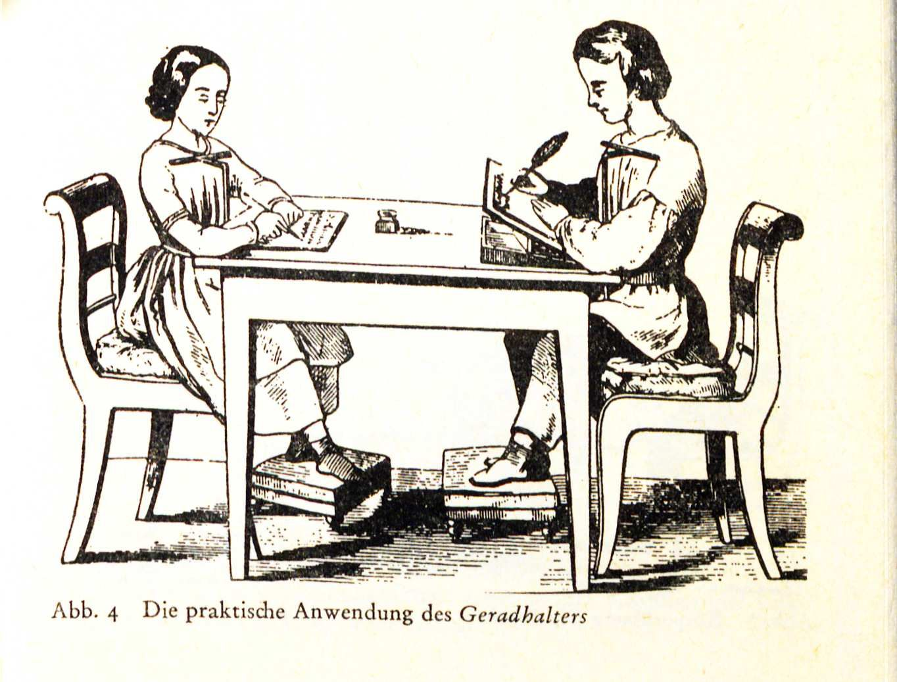

Seelenmord.
Daniel Paul Schreber, Denkwürdigkeiten eines Nervenkranken (1903)
Les non-dupes errent.
Jacques Lacan, seminer başlığı (1973–1974)
I
Lacan babanın işlevine ilk kez, henüz bir psikanalist olarak tanınmadan önce, 1938’de Fransız Ansiklopedisi için yazdığı aile kompleksleri üzerine uzun metinde değinir ve dikkat çekici bir tespitte bulunur: Çağdaş Batı toplumlarında babanın imgesinin toplumsal bir düşüş yaşadığını, nevrozların biçiminin de bu düşüşle birlikte değiştiğini söyler.1 Bu tespit, Lacan’ın babaya dair düşüncesinin en başından beri nostaljik bir otorite övgüsünden uzak olduğunu gösterir. Lacan’ı ilgilendiren, babanın gücü değil, işlevidir: Öznenin dile, yasaya ve arzuya bağlanmasını sağlayan şey.
Kavramın Fransızcadaki adı, Lacan’ın sıklıkla oynadığı bir sesteşliği taşır: Nom-du-Père, Baba’nın Adı, kulağa Non-du-Père, Baba’nın Hayır’ı olarak da gelir. Baba’nın Adı aynı zamanda bir yasaktır: çocuğun annenin tek arzu nesnesi olma konumuna getirilen bir sınır. Bu sınır, çocuğu annenin arzusuyla kurduğu kapalı, ikili ilişkiden kurtarır ve onu daha geniş bir dünyaya, dilin ve toplumsal bağın dünyasına açar.
II
Freud babanın işlevini iki büyük mitle düşünmüştü. 1913 tarihli Totem ve Tabu’da, insanlık tarihinin başında bütün kadınları kendisine saklayan, oğullarını dışlayan bir ilkel baba tasarlar; oğullar birleşip onu öldürür, bedenini yer ve ardından, suçluluk duygusuyla, ölü babanın yasağını kendileri yeniden kurar. Yasa, bu mitte, ölü babadan doğar: Baba, öldürüldükten sonra yaşarken olduğundan daha güçlüdür.2 Freud’un son kitabı Musa ve Tek Tanrıcılık da, bir halkın kimliğini kuran yasanın bir babanın öldürülmesi ve bu öldürmenin bastırılması üzerine kurulduğu fikri etrafında örülüdür.
Lacan bu mitleri yapısal bir dille yeniden okur. Mitlerin söylediği şey, ona göre, babanın işlevinin gerçek bir kişinin gücüne değil, bir ada, bir göstergeye dayandığıdır. Sembolik baba, ölü babadır; yani bedensel varlığından bağımsız olarak, yalnızca bir ad olarak işleyen babadır. Bu yüzden babalık işlevi, biyolojik babanın yokluğunda da yerine getirilebilir; tersine, fiziksel olarak orada bulunan bir baba bu işlevi taşımayabilir. Belirleyici olan, annenin söyleminde babaya ayrılan yerdir: Annenin, kendisinin ötesinde bir yasaya, bir üçüncü terime başvurup başvurmadığı.
III
Lacan bu işlemi 1958’de yayımlanan Psikozun Olası Her Türlü Tedavisinin Ön Sorusu Üzerine başlıklı metninde, babalık metaforu adını verdiği bir formülle yazar.3 Metafor, dilbilimde bir göstergenin bir başka göstergenin yerine geçmesidir; babalık metaforunda Baba’nın Adı, Annenin Arzusu göstergesinin yerine geçer. Çocuk için annenin arzusu başlangıçta muammalı bir şeydir: Annenin gidip geldiği, kimi zaman orada kimi zaman başka yerde olduğu deneyimi, “Annem ne istiyor?” sorusunu doğurur. Babalık metaforu bu soruya bir yanıt getirir: Annenin arzusu, onun ötesinde bir şeye, fallusa yöneliktir. Böylece muammalı ve sınırsız olan annenin arzusu bir anlam ve bir sınır kazanır.
Lacan bu işlemin dilin anlam üretme kapasitesinin temeli olduğunu düşünür ve bunu, üçüncü seminerinde, edebiyat tarihinden alınmış güzel bir örnekle gösterir. Racine’in Athalie tragedyasının açılış sahnesinde, kraliçe Athalie’nin korkusuyla sarsılan subay Abner’e başrahip Joad şu yanıtı verir: Tanrı’dan korkarım, sevgili Abner, ve başka hiçbir korkum yoktur. Lacan’a göre bu cümlenin “Tanrı korkusu” ifadesi, sahnedeki bütün kaygan, belirsiz korkuları birden bire tek bir anlamın etrafında sabitler; ona bir döşemecinin kumaşı minderin içine diktiği düğmeleri hatırlatan bir adla, point de capiton, yani dikiş noktası adını verir.4 Baba’nın Adı, öznenin bütün dünyası için böyle bir dikiş noktasıdır: Gösterenlerin sonsuz kayışını belirli anlamlar etrafında durduran ve özneye tutarlı bir dünyada yaşama imkânı veren nokta.
IV
Babalık metaforunun işlemediği durumlarda ne olur? Lacan bu soruyu aynı seminerde ele alır ve Freud’un zaman zaman kullandığı Verwerfung terimini Fransızcaya forclusion olarak çevirir. Türkçede çoğunlukla “ilga” ya da “dışlama” olarak karşılanan bu terim, nevrozdaki bastırmadan farklı bir mekanizmayı adlandırır. Bastırmada bir gösteren bilinçdışına itilir, ama Sembolik düzenin içinde kalır ve semptomlarda, rüyalarda, dil sürçmelerinde geri döner. İlgada ise gösteren hiçbir zaman Sembolik düzene kaydedilmemiştir. Lacan’ın Freud’dan devraldığı formülle, Sembolik’ten dışlanan şey Gerçek’te yeniden belirir: Sembolik olarak işlenemeyen şey, halüsinasyon ya da sanrı biçiminde, dışarıdan gelen bir şey olarak geri döner.
Lacan bu mekanizmanın ilk örneğini Freud’un Kurt Adam vakasında bulur. Beş yaşındaki çocuk, bahçede bir çakıyla ağacın kabuğunu oyarken, birden küçük parmağının kesildiğini, yalnızca bir deri parçasıyla eline tutunduğunu görür; konuşamaz, birkaç adım ötedeki dadısına bakamaz, oturup bekler ve bir süre sonra parmağının hiç yaralanmamış olduğunu fark eder.5 Lacan’a göre bu halüsinasyon, Sembolik düzende kayıt bulamamış bir kastrasyon tehdidinin Gerçek’te, bir görüntü olarak geri dönüşüdür. Psikozun yapısal koşulu ise, Lacan’a göre, Baba’nın Adı göstereninin ilgasıdır. Bu durumda anlamın sabitlenmesini sağlayan dikiş noktası eksik kalır; özne, belirli bir karşılaşma anında, Baba’nın Adı’nın çağrıldığı ama yanıt veremediği bir anda, dilin çözülmesiyle karşı karşıya kalabilir.
V
Bu tezin klasik örneği, Alman yargıç Daniel Paul Schreber’dir. Schreber 1842’de Leipzig’de doğdu. Babası Moritz Schreber, on dokuzuncu yüzyıl Almanya’sının en tanınmış hekim ve eğitimcilerinden biriydi; çocuk yetiştirme, beden eğitimi ve sağlıklı yaşam üzerine yazdığı kitaplar çok sayıda baskı yaptı, ölümünden sonra adı Almanya’nın küçük şehir bahçelerine, bugün de kullanılan Schrebergarten adıyla verildi. Moritz Schreber, 1858’de yayımladığı Kallipädie’de, çocukların bedenlerinin ve iradelerinin erken yaştan itibaren disipline edilmesini savunuyor, bu amaçla kendi tasarladığı aletleri tanıtıyordu: çocuğun masa başında dik oturmasını sağlayan bir duruş çubuğu, uyurken sırtüstü yatmasını sağlayan kayışlar, çene ve başı düzgün tutan bantlar.


Daniel Paul Schreber parlak bir hukuk kariyeri yaptı. İlk ruhsal krizini 1884’te, Reichstag seçimlerinde aday olup kaybettikten sonra geçirdi ve Leipzig Üniversitesi psikiyatri kliniğinde, Profesör Paul Flechsig’in tedavisinde iyileşti. İkinci ve çok daha ağır krizi 1893’te, Dresden Yüksek Eyalet Mahkemesi’nde daire başkanlığına atanmasının hemen ardından başladı ve yaklaşık dokuz yıl sürdü. Bu dönemde geliştirdiği karmaşık sanrısal sistemde Schreber, Tanrı’nın ışınlarıyla doğrudan ilişki içindeydi; dünyanın kurtuluşu için bir kadına dönüşmesi ve Tanrı’dan yeni bir insan soyunu dünyaya getirmesi gerekiyordu; doktoru Flechsig ise ona karşı bir “ruh cinayeti”, Seelenmord, işlemişti. Schreber 1903’te, vesayetten kurtulmak için açtığı ve kazandığı davanın ardından, bu deneyimi olağanüstü bir açıklık ve zekâyla anlattığı Bir Sinir Hastasının Anıları’nı yayımladı.6
Freud, Schreber’i hiç görmeden, yalnızca bu kitaba dayanarak 1911’de bir inceleme yazdı ve sanrıyı, Flechsig’e ve onun ardındaki babaya yönelik bastırılmış bir eşcinsel arzunun dönüşümü olarak yorumladı.7 Lacan ise üçüncü seminerinin büyük bölümünü Schreber’e ayırır ve dikkati krizin ortaya çıktığı ana çeker: Schreber, daire başkanlığına atandığında, yani yaşlı ve deneyimli meslektaşlarının üzerinde, simgesel bir babalık konumunu üstlenmeye çağrıldığında çöker. Lacan’a göre bu çağrı, Schreber’in Sembolik düzeninde karşılığı olmayan bir yere seslenmiştir; yanıtı verecek gösterenin yokluğunda Sembolik düzende bir delik açılmış ve bu delik, sanrısal sistemle doldurulmaya çalışılmıştır. Bu açıdan sanrı bir çöküş olmaktan çok, Freud’un da sezdiği gibi, bir onarım girişimidir.
Schreber vakasının bir başka okuması, 1950’lerin sonundan itibaren, psikanalist William Niederland’ın araştırmalarıyla gündeme geldi. Niederland, Moritz Schreber’in kitaplarını ve aletlerini oğlunun sanrılarıyla karşılaştırdı ve sanrılardaki bedensel işkencelerin, babanın uyguladığı eğitim düzeneklerinin bir yankısı olabileceğini öne sürdü. Morton Schatzman ise 1973’te yayımlanan Ruh Cinayeti’nde bu düşünceyi daha da ileri taşıdı ve babanın pedagojisini bir tür sistematik ruhsal şiddet olarak yorumladı.8 Bu okumalar, Lacan’ın yapısal açıklamasıyla çelişmekten çok onu tamamlar: Gerçek babanın aşırı, her yere nüfuz eden, sınır tanımayan varlığı, tam da yasanın simgesel işlevinin yerine geçememesinin, bir adın yerini bir aletin almasının göstergesi olarak okunabilir.
VI
Lacan’ın Baba’nın Adı’na dair düşüncesi zaman içinde köklü biçimde değişir. 1963 sonbaharında Baba’nın Adları başlığıyla başlattığı seminer, Uluslararası Psikanaliz Derneği’nin Lacan’ı eğitim analistleri listesinden çıkarmasının ardından yalnızca tek bir derste, 20 Kasım 1963’teki derste kalır; Lacan bu konuyu bir daha hiçbir zaman bu başlıkla ele almayacaktır. Ama başlıktaki çoğul, gelecekteki gelişmenin habercisidir: Baba’nın Adı artık tek ve ayrıcalıklı bir gösteren değil, öznenin dünyasını bir arada tutabilen çeşitli işlevlerden biridir. 1973–1974 seminerinin başlığı, Les non-dupes errent, “Kanmayanlar yanılır”, Fransızcada Les Noms du Père ile sesteştir; Lacan bu oyunla, babanın işlevine hiç kanmadığını, her türlü simgesel otoriteyi bir yanılsama olarak gördüğünü düşünen öznenin, yolunu kaybetmeye mahkûm olduğunu ima eder.
Son olarak 1975–1976 tarihli Le Sinthome seminerinde Lacan, Baba’nın Adı’nı, Borromean düğümünde Gerçek, Sembolik ve Hayali’yi bir arada tutan dördüncü halka olarak yeniden düşünür ve bu işlevin öznenin kendi icadı olan bir sinthome tarafından da üstlenilebileceğini gösterir. James Joyce’un yazısı, Lacan’ın gözünde böyle bir icattır: Babası simgesel işlevini yerine getirememiş bir yazarın, kendine bir ad yaparak dağılmaya yüz tutmuş dünyasını bir arada tutması.9
Geç Lacan’ın bu açılımı, çağdaş Lacanyen klinikte önemli sonuçlar doğurdu. Jacques-Alain Miller ve meslektaşlarının 1996’da Angers’de, 1997’de Arcachon’da ve 1998’de Antibes’te düzenledikleri klinik toplantılar, sonuncusunda adını alan bir kavramla sonuçlandı: sıradan psikoz.10 Bu kavram, belirgin sanrı ya da halüsinasyon göstermeyen, ama Baba’nın Adı işlevinin zayıf olduğu, öznenin kendi çözümleriyle, küçük ve sessiz icatlarla dengesini sürdürdüğü klinik tabloları düşünmeye imkân tanır.
Bu bakış açısı toplumsal düzeyde de düşündürücüdür. Lacan’ın daha 1938’de sözünü ettiği baba imgesinin düşüşü, bugün çok daha belirgin biçimde yaşanıyor. Ama Lacanyen düşünce, bu durumu bir ataerkil otoritenin geri getirilmesi çağrısıyla karşılamaz. Baba’nın Adı’nın çoğullaşması, yasanın ve anlamın artık tek bir merkezden değil, öznenin kendi icatlarından, kendi bağlarından, kendi adlarından da gelebileceği anlamına gelir. Lacanyen klinik, bu icatları patolojik sapmalar olarak değil, öznenin yaşamını mümkün kılan çözümler olarak dinlemeye özen gösterir. Baba’nın Adı, bir otorite övgüsü değil, öznenin dile ve arzuya nasıl bağlandığına dair yapısal bir sorudur; ve bu soru, Lacan’ın verdiği yanıtlar değişse de, kliniğin merkezinde kalmaya devam ediyor.
Notlar
- J. Lacan, “Les complexes familiaux dans la formation de l’individu” (1938), Autres écrits (2001). ↩︎
- S. Freud, Totem ve Tabu (1913), SE XIII. Freud’un metinleri için Türkçe adlar verilmiş, cilt numaraları Standard Edition’a (SE) göre belirtilmiştir. ↩︎
- J. Lacan, “D’une question préliminaire à tout traitement possible de la psychose” (1958), Écrits (1966), s. 531–583. ↩︎
- J. Lacan, Le Séminaire, Livre III: Les psychoses (1955–1956), Paris: Seuil, 1981, Athalie üzerine dersler. ↩︎
- S. Freud, “Bir Çocukluk Nevrozunun Öyküsünden” (1918), SE XVII, VII. bölüm. ↩︎
- D. P. Schreber, Denkwürdigkeiten eines Nervenkranken (1903). ↩︎
- S. Freud, “Paranoyak Bir Vakanın Otobiyografik Anlatımı Üzerine Psikanalitik Notlar” (1911), SE XII. ↩︎
- W. G. Niederland, The Schreber Case (1974); M. Schatzman, Soul Murder: Persecution in the Family (1973). ↩︎
- J. Lacan, Le Séminaire, Livre XXIII: Le sinthome (1975–1976), Paris: Seuil, 2005. ↩︎
- J.-A. Miller (Ed.), La psychose ordinaire : la convention d’Antibes (1999). ↩︎
Kaynakça
- Freud, S. (1911). Paranoyak Bir Vakanın Otobiyografik Anlatımı Üzerine Psikanalitik Notlar. SE XII.
- Freud, S. (1913). Totem ve Tabu. SE XIII.
- Freud, S. (1918). Bir Çocukluk Nevrozunun Öyküsünden. SE XVII.
- Freud, S. (1939). Musa ve Tek Tanrıcılık. SE XXIII.
- Lacan, J. (1966). D’une question préliminaire à tout traitement possible de la psychose. Écrits içinde (s. 531–583). Paris: Seuil.
- Lacan, J. (1981). Le Séminaire, Livre III: Les psychoses (1955–1956). Paris: Seuil.
- Lacan, J. (2001). Les complexes familiaux dans la formation de l’individu (1938). Autres écrits içinde. Paris: Seuil.
- Lacan, J. (2005). Le Séminaire, Livre XXIII: Le sinthome (1975–1976). Paris: Seuil.
- Miller, J.-A. (Ed.) (1999). La psychose ordinaire : la convention d’Antibes. Paris: Agalma/Seuil.
- Niederland, W. G. (1974). The Schreber Case. New York: Quadrangle.
- Schatzman, M. (1973). Soul Murder: Persecution in the Family. New York: Random House.
- Schreber, D. P. (1903). Denkwürdigkeiten eines Nervenkranken. Leipzig: Oswald Mutze.
- Schreber, M. (1858). Kallipädie oder Erziehung zur Schönheit. Leipzig.